Mon, 09 Apr 2012 09:02:24 GMT
Samsung YOUM: Samsung presenta sus primeras pantallas AMOLED flexibles
Samsung YOUM: Samsung presenta sus primeras pantallas AMOLED flexibles
Las pantallas flexibles han sido durante la última década una promesa de grandes fabricantes y un sueño para muchos de nosotros porque el tener pantallas flexibles da la posibilidad de colocarlas en miles de lugares donde nunca antes se nos hubiese pasado la cabeza que se podría llevar una pantalla. Samsung ha presentado oficialmente su pantalla flexible, y la ha bautizado como Samsung YOUM. Es la misma Samsung quien describe a esta pantalla como delgada, ligera e irrompible. De las dos no tenemos nada que decir, de irrompible… dame unos...
Las pantallas flexibles han sido durante la última década una promesa de grandes fabricantes y un sueño para muchos de nosotros porque el tener pantallas flexibles da la posibilidad de colocarlas en miles de lugares donde nunca antes se nos hubiese pasado la cabeza que se podría llevar una pantalla.
Samsung ha presentado oficialmente su pantalla flexible, y la ha bautizado como Samsung YOUM. Es la misma Samsung quien describe a esta pantalla como delgada, ligera e irrompible. De las dos no tenemos nada que decir, de irrompible… dame unos minutos con ella. Pero el caso es que estas pantallas flexibles se han conseguido desarrollar usando cuatro capas, TFT por debajo para sostener al resto de capas, la capa orgánica donde están los píxeles, una capa de película llamada Encap (en busca de una mejor traducción) y la capa polarizante. Al no usar ningún tipo de cristal se puede manejar con mucha más facilidad y permite que se pueda doblar sin problemas.
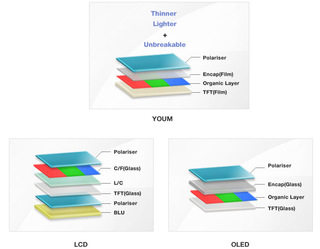
Parece que Samsung está dispuesta a empezar a fabricar estas pantallas en el segundo trimestre de este mismo año, lo cual significa que ya habrá productos que lleven este tipo de pantallas, seguramente algún producto de Samsung para intentar convencer con esta tecnología.
¿Siguiente paso? Pantallas flexibles AMOLED táctiles.
Vía: OLED-Display
Sun, 08 Apr 2012 23:02:16 GMT
Samsung Galaxy Tab 2 listada en 399 dólares, reconsiderando la gama económica
Samsung Galaxy Tab 2 listada en 399 dólares, reconsiderando la gama económica
El éxito notorio de Note ha supuesto una revolución en la estrategia comercial de Samsung, hasta tal punto que la compañía ha decidido volcarse con esta nueva línea de productos dentro de la familia Galaxy, creando un dispositivo tan interesante como Galaxy Note 10.1, tablet con interfaz táctil dual — capacitiva y mediante stylus — que se convertirá en el principal caballo de batalla de la firma coreana en la gama alta de tablets, junto a las Transformer Prime “Infinity” o el nuevo iPad. Por lo tanto y para cubrir...
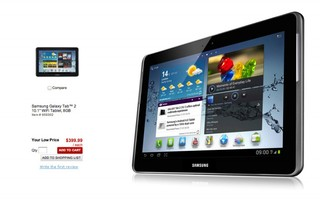
El éxito notorio de Note ha supuesto una revolución en la estrategia comercial de Samsung, hasta tal punto que la compañía ha decidido volcarse con esta nueva línea de productos dentro de la familia Galaxy, creando un dispositivo tan interesante como Galaxy Note 10.1, tablet con interfaz táctil dual — capacitiva y mediante stylus — que se convertirá en el principal caballo de batalla de la firma coreana en la gama alta de tablets, junto a las Transformer Prime “Infinity” o el nuevo iPad. Por lo tanto y para cubrir el sector restante, el de dispositivos más accesibles económicamente, Samsung ha reconsiderado la familia Galaxy Tab y ha producido la segunda generación de esta gama de tablets recortando prestaciones que han ido derechas a la línea Note.
Un distibuidor minorista estadounidense, Office Depot, ya está listando la nueva Galaxy Tab 2 10.1, que todavía está pendiente de recibir fecha de lanzamiento oficial, con un precio de US$399.99 para la versión Wi-Fi con 8 GB de almacenamiento. Esto la pondría a la altura de iPad 2, que tras el lanzamiento del nuevo modelo “Retina Display” ha experimentado una rebaja de 100 dólares en su precio de venta al público. Por supuesto, tras publicar este precio la página de producto, como es habitual en este tipo de filtraciones, ha desaparecido, eso sí, dejando un pequeño rastro en el listado de la categoría Tablets del distribuidor. Esta nueva “gama” de tablets más económicas que los modelos punteros suponen una serie de dispositivos “de acceso” a este mundillo, sin llegar al nivel de equipos mucho más humildes con especificaciones muy modestas, pero sin duda notablemente más baratas que sus homólogas del “máximo nivel”.
Resulta sorprendente que Samsung haya optado por remodelar su línea estrella Galaxy Tab para cumplir con objetivos menos ambiciosos, lo que demuestra la gran acogida que ha tenido el Superphone Galaxy Note y especialmente su sistema de interaccíon híbrido Capacitivo/S-Pen, que parece ofrecer una productividad mejorada a un sector de los consumidores más preocupado por tareas un tanto específicas. ¿Será suficiente este recorte con hardware más discreto para lograr atraer a otro tipo de consumidor? Cabe recordar que algunas de las triunfadoras de primera generación como Asus Transformer TF101, aunque en teoría descatalogadas, se pueden encontrar todavía en el mercado, con especificaciones similares a las de esta Galaxy Tab 2, con CPU de doble núcleo a 1Ghz y 1GB de memoria RAM, y un precio muy atractivo inferior a los 399 dólares.
Sat, 07 Apr 2012 20:26:26 GMT
A una semana de la presentación de las cámaras Samsung NX20, NX210 y NX1000
A una semana de la presentación de las cámaras Samsung NX20, NX210 y NX1000
Hace un par de días que veíamos el lanzamiento de Pansonic en la gama micro cuatro tercios, la nueva Panasonic Lumix GF5 y no es raro ver como tan poco tiempo después, una de sus competidoras empieza a calentar motores para la presentación de sus nuevas cámaras. Es el caso de la coreana Samsung, quien parece que en una semana va a presentar una nueva serie de cámaras NX. Los modelos de los que se hablan son las NX20, NX210 y NX1000. De la NX20 se habla que es una...
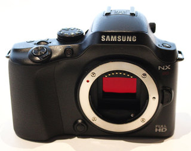
Hace un par de días que veíamos el lanzamiento de Pansonic en la gama micro cuatro tercios, la nueva Panasonic Lumix GF5 y no es raro ver como tan poco tiempo después, una de sus competidoras empieza a calentar motores para la presentación de sus nuevas cámaras.
Es el caso de la coreana Samsung, quien parece que en una semana va a presentar una nueva serie de cámaras NX. Los modelos de los que se hablan son las NX20, NX210 y NX1000.
De la NX20 se habla que es una cámara APS-C sin espejo con sensor de 20.3 megapíxeles, un rango USO entre 100-12800, 8fps, Wi-Fi integrado para subir fotos automáticamente, pantalla AMOLED de 3 pulgadas con visor electrónico y grabación de vídeo en Full HD. Parece que será algo más grande que la NX11 y que saldrá a la venta este mismo mes de abril por no menos de 800€.
El modelo NX210 será idéntica a la NX200, con la excepción que tendrá Wi-Fi integrado como la NX20.
En cuanto a la NX1000 parece que será una cámara algo más barata que la NX20, con un sensor de 20.3 megapíxeles y Wi-Fi integrado.
La semana que viene se espera que lleguen estas tres nuevas cámaras sin espejo, que vienen a combatir las nuevas Panasonic y sobre todo a intentar que Sony no coma demasiado mercado con sus NEX.
Sat, 07 Apr 2012 01:07:22 GMT
Philips ErgoSensor: el monitor Full HD que se preocupa por tu postura
Philips ErgoSensor: el monitor Full HD que se preocupa por tu postura
Los fabricantes sólo se preocupan por el cómo van a deslumbrarnos con increíbles diseños y la calidad de imagen que puedan tener sus pantallas, es algo innegable y queda claro que Philips cae en ese grupo. Sin embargo, han logrado dar con una característica adicional para su nuevo producto que los hace un poco más sensibles con sus consumidores o, simplemente lo disimula un poco más; han fabricado un monitor que se preocupa por nuestra postura añadiendo sensores que nos llamarían la atención cuando no estemos sentados correctamente ante él....
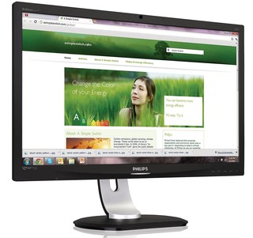
Los fabricantes sólo se preocupan por el cómo van a deslumbrarnos con increíbles diseños y la calidad de imagen que puedan tener sus pantallas, es algo innegable y queda claro que Philips cae en ese grupo. Sin embargo, han logrado dar con una característica adicional para su nuevo producto que los hace un poco más sensibles con sus consumidores o, simplemente lo disimula un poco más; han fabricado un monitor que se preocupa por nuestra postura añadiendo sensores que nos llamarían la atención cuando no estemos sentados correctamente ante él.
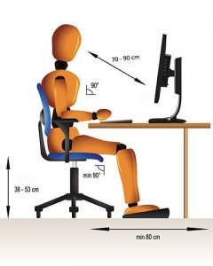
El nuevo monitor lleva por nombre Philips ErgoSensor, es una pantalla LCD con 24 pulgadas en diagonal y la resolución comercial más alta actualmente: 1920 x 1080 píxeles. Pero lo interesante de este equipo es que integra un sensor CMOS como el que se utiliza en las cámara digitales para determinar la distancia y la posición de la persona que esté frente a él. Gracias a un software desarrollado por DigitalOptics Corporation, el monitor no sólo podrá identificar sino que también podrá sugerir al usuario cómo ubicarse frente a él, aprovechar mejor sus prestaciones y, además, no terminar con dolor de cuello o espalda.
Según la explicación de Philips, el sensor mide la distancia en que la pupila del usuario se encuentra para determinar si la distancia es la óptima, si el cuello está inclinado, en fin, si la posición que estamos tomando es la ideal. Para completar, integraron la posibilidad de detectar si no nos hemos levantado durante un cierto, de ser así, nos mandará a descansar. Estoy seguro que si le comento a mi madre todo lo que hace este monitor, me lo regala de cumpleaños.
La ergonomía del monitor dependerá de la configuración que cada quien utilice, ya que no todos tenemos el mismo tamaño, sería injusto adoptar posiciones que no estén acordes porque terminaríamos perjudicando y dándole un mal uso a la tecnología que Philips incluye. Philips ErgoSensor está disponible por 285 euros.
Fri, 06 Apr 2012 20:36:39 GMT
Todos los vídeos 1080p de YouTube se convierten en 3D
Todos los vídeos 1080p de YouTube se convierten en 3D
Por alguna razón, nos guste o no, Google cree que el 3D tiene algo de interés en los vídeos de YouTube, acaban de anunciar que todos los vídeos subidos en 1080p (no valen los subidos en 720p), se convertirán automáticamente en 3D. Felicidades, tu televisión conectada a internet, quieras o no, ya es 3D. Y digo conectada, porque así podrás acceder vía aplicación o vía web a YouTube y poder ver vídeos en 3D. Pero básicamente Google, con este cambio, está permitiendo que cualquier vídeo de alta resolución se pueda...
Por alguna razón, nos guste o no, Google cree que el 3D tiene algo de interés en los vídeos de YouTube, acaban de anunciar que todos los vídeos subidos en 1080p (no valen los subidos en 720p), se convertirán automáticamente en 3D.
Felicidades, tu televisión conectada a internet, quieras o no, ya es 3D.
Y digo conectada, porque así podrás acceder vía aplicación o vía web a YouTube y poder ver vídeos en 3D. Pero básicamente Google, con este cambio, está permitiendo que cualquier vídeo de alta resolución se pueda convertir en un vídeo 3D, eso si, aun necesitarás una de esas gafas con un cristal azul y otro rojo, no te creas que es un sistema 3D activo. También hay una limitación de conversión a vídeos cortos, que aunque YouTube no lo indica por los que hemos visto no superan los 20 minutos.
Para activarlo, tendrás que encontrar algún vídeo en alta definición y si se ha convertido verás una casilla que pone “3D”. Dentro verás más opciones donde puedes ajustar las opciones 3D dependiendo de las gafas que tengas.
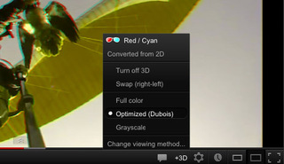
Foto (CC) Matt Neale
Fri, 06 Apr 2012 19:15:23 GMT
Toray anuncia futuros protectores que se auto-reparan en 10 segundos
Toray anuncia futuros protectores que se auto-reparan en 10 segundos
Toray Advanced Film anunció la solución -a futuro- perfecta para proteger nuestros ordenadores portátiles, tabletas, teléfonos inteligentes, etcétera. Según mostraron hace poco en Japón, han logrado desarrollar una capa que al recubir el material base es capaz de auto reparare en sólo 10 segundos tras recibir, como lo ejemplifican, arañazos de piezas de metal o de magnitud similar. Teniendo en cuenta que hoy en día se crean productos bastante delicados por tratar de ofrecer un diseño más elegante, esta capa protectora estaría enfocada a proteger las carcasas de nuestros ordenadores....
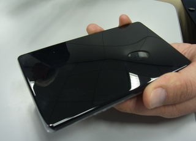
Toray Advanced Film anunció la solución -a futuro- perfecta para proteger nuestros ordenadores portátiles, tabletas, teléfonos inteligentes, etcétera. Según mostraron hace poco en Japón, han logrado desarrollar una capa que al recubir el material base es capaz de auto reparare en sólo 10 segundos tras recibir, como lo ejemplifican, arañazos de piezas de metal o de magnitud similar.
Teniendo en cuenta que hoy en día se crean productos bastante delicados por tratar de ofrecer un diseño más elegante, esta capa protectora estaría enfocada a proteger las carcasas de nuestros ordenadores. Lamentablemente no hay un vídeo que demuestre el proceso de curación pero en TechOn agregan que se les hizo una demostración del producto sobre un dispositivo móvil que sufrió un ataque directo con un cepillo de metal lo cual terminó en arañazos, pero tal como sucedería con Wolverine, a los 10 segundos todo estaba intacto y aseguran que el resultado es la imagen que tienen arriba.
A pesar de que no hay grandes detalles sobre el material de fabricación ni el proceso de cómo se logra que se auto repare, la base de todo está en el Polyethylene Terephthalate, un material semicritalino que no llega a ser transparente que viene siendo el resultado de poseer propiedades de elasticidad y amortiguación lo cual, gracias a la mente de expertos, es que logra llegar al resultado que hoy se muestra.
La verdad espero que pronto tengamos mayores detalles sobre este material, de ahora en adelante creo que mucho vamos a rezar para que se haga realidad y pueda comercializarse pronto a nivel mundial. Mi vieja IBM habría estado muy agradecida hace unos años.
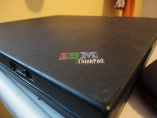
Fri, 06 Apr 2012 17:03:27 GMT
GeForce GTX 670 Ti, o cómo aprovechar un chip Kepler defectuoso
GeForce GTX 670 Ti, o cómo aprovechar un chip Kepler defectuoso
Nuevos detalles emergen de la segunda GPU Kepler que llegará al mercado, GeForce GTX 670 Ti. Las tarjetas gráficas basadas en el mismo chip que GTX 680 llegarán en el mes de mayo, y según el sitio web alemán 3DCenter, serían versiones “limitadas” de sus hermanas mayores. Los núcleos GK104 integrados en las dos variantes, GTX 670 y 670 Ti provendrían de unidades GTX 680 que no llegaron a pasar todos los tests previos en el proceso de desarrollo, y por lo tanto no eran válidos para los modelos de...
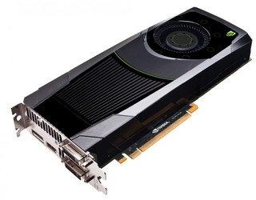
Nuevos detalles emergen de la segunda GPU Kepler que llegará al mercado, GeForce GTX 670 Ti. Las tarjetas gráficas basadas en el mismo chip que GTX 680 llegarán en el mes de mayo, y según el sitio web alemán 3DCenter, serían versiones “limitadas” de sus hermanas mayores. Los núcleos GK104 integrados en las dos variantes, GTX 670 y 670 Ti provendrían de unidades GTX 680 que no llegaron a pasar todos los tests previos en el proceso de desarrollo, y por lo tanto no eran válidos para los modelos de mayor rendimiento. NVIDIA, como es práctica habitual en el mundo de las GPUs habría tomado estos chips anulando uno de los multiprocesadores de Streaming, reduciendo el número de núcleos CUDA disponible.
Con 192 núcleos CUDA por cada uno de los 8 multiprocesadores del encapsulado de GK104, las nuevas GPUs del fabricante incorporarían hasta un total de 1344 unidades de procesamiento CUDA. Esto permitiría a NVIDIA rescatar los chips descartados con anterioridad y ofrecer al consumidor una gran tarjeta gráfica, virtualmente idéntica al modelo de más potencia con un número inferior de unidades de procesamiento, pero conservando la interfaz de memoria y las características del núcleo GK104. En anteriores generaciones hemos visto este movimiento tanto por parte de NVIDIA como de su competidor directo, AMD, siendo bastante evidente el caso de la última GeForce GT 560 Ti 448CU, que integraba el mismo chip que los modelos 570 y 580, pero recortado por defectos de fabricación. Según los últimos rumores, las especificaciones de las nuevas GPUs quedarían organizadas de la siguiente manera:
GeForce GTX 670 Ti
- 1344 núcleos CUDA
- 112 Unidades de Texturizado
- 32 ROPs
- 2GB de memoria GDDR5 con interfaz 256-bit
- Frecuencias: 900Mhz para núcleo, 1250Mhz (5Ghz efectivo)
De acuerdo con las estimaciones, las nuevas GeForce GTX 670 Ti llegarán al mercado con unos precios bastante similares a los de sus competidores directos, AMD Radeon HD 7950, entre 349 y 399 dólares. Por supuesto, sólo podemos catalogar esto dentro de la categoría de rumor, al no tener confirmación oficial, pero al igual que las últimas filtraciones previas al lanzamiento de Kepler, es muy probable que la información no vaya nada desencaminada.
Fri, 06 Apr 2012 15:04:07 GMT
Asus arreglará los problemas con la recepción GPS de Transformer Prime con un “accesorio”
Asus arreglará los problemas con la recepción GPS de Transformer Prime con un “accesorio”
Es una de las tablets Android más populares del momento gracias a su impresionante hardware y al más que útil dockstation con teclado, trackpad y batería adicional, que convierten a Transformer Prime en un híbrido entre netbook y tablet que hace las delicias de muchos usuarios en estos momentos. Pero no todo va “miel sobre hojuelas” con el buque insignia de ASUS en el mercado de los dispositivos móviles; la tablet tiene serios problemas con el módulo GPS, problemas que han sido reconocidos por la compañía y cuya solución, hasta...
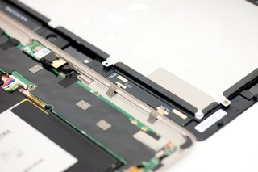
Es una de las tablets Android más populares del momento gracias a su impresionante hardware y al más que útil dockstation con teclado, trackpad y batería adicional, que convierten a Transformer Prime en un híbrido entre netbook y tablet que hace las delicias de muchos usuarios en estos momentos. Pero no todo va “miel sobre hojuelas” con el buque insignia de ASUS en el mercado de los dispositivos móviles; la tablet tiene serios problemas con el módulo GPS, problemas que han sido reconocidos por la compañía y cuya solución, hasta el momento, no existía, por lo que en las características oficiales del producto desaparecía la funcionalidad de geolocalización.
Hoy vemos que ASUS sí se preocupa por su dispositivo estrella, y podría estar planeando una solución para este mal funcionamiento, provocado según se especula por una mala colocación del receptor, bloqueado por la carcasa metálica de la tablet. Si embargo la solución no pasa por modificar el hardware interno de la unidad, como sería de esperar, lo que implicaría un sinfín de solicitudes de reparación por parte de los actuales usuarios de la tablet, sino por un “accesorio externo”, como parece indicar un intercambio de correos electrónicos entre un miembro de XDA Developers y el departamento de atención de ASUS. La compañía habría contado al usuario que lanzarán un receptor externo para la tablet, que solucionará los problemas de recepción del módulo interno:
“Lanzaremos un ‘dongle’ en breve, que arreglará la función GPS y será un GPS totalmente usable que enlazará con muchos satélites y mantendrá este enlace con la conectividad Wi-Fi activa” […] “será similar a la bisagra del dockstation. Se encajará en la base de la unidad y hará juego con el chasis del Prime.”
La unidad descrita por ASUS sería básicamente un receptor externo que se conectaría mediante USB a la tablet, con un aspecto similar al enganche del accesorio teclado. Este se proporcionaría “de manera gratuita” a los poseedores de uno de estos dispositivos, y llegaría a mediados de este mismo mes de abril. Esto implica que las nuevas unidades de ASUS Transformer Prime llegarían con el mismo módulo GPS inutilizado, o quizás sin módulo interno, apoyándose en este supuesto receptor externo para las tareas de geo-posicionamiento. Además de este curioso “fix”, las próximas remesas de ASUS Transformer Prime llegarán con un adaptador Wireless mejorado, que aumentará el rendimiento de las redes Wi-Fi, añadiendo en su número de serie un característico “C3”, que indicaría la nueva revisión de hardware.
Fri, 06 Apr 2012 11:13:45 GMT
Google Glass es real y Sergey Brin lo está usando
Google Glass es real y Sergey Brin lo está usando
En la imagen de arriba puedes ver al famoso blogger Robert Scoble con el co fundador de Google Sergey Brin, y si, aunque la foto se ve algo rara porque el tamaño orignal se ve en perspectiva, Sergey Brin está usando un prototipo de Google Glass. Aunque se supone que aun estaba en fase de desarrollo, bastante adelantado tiene que estar el proyecto de Google Glass para que el mismísimo Sergey Brinn salga a la calle o a un evento con estas gafas y que la gente se pregunte qué...
En la imagen de arriba puedes ver al famoso blogger Robert Scoble con el co fundador de Google Sergey Brin, y si, aunque la foto se ve algo rara porque el tamaño orignal se ve en perspectiva, Sergey Brin está usando un prototipo de Google Glass.
Aunque se supone que aun estaba en fase de desarrollo, bastante adelantado tiene que estar el proyecto de Google Glass para que el mismísimo Sergey Brinn salga a la calle o a un evento con estas gafas y que la gente se pregunte qué demonios es eso.
Robert Scoble no ha contado muchos detalles más, solo que son de verdad y funcionan, cuando se acercó a Sergey una luz parpadeó y que llevaba una mochila a la espalda que podría tener una batería para que este prototipo funcione bien.
Vía: SlashGear | Foto (CC) Thomas Hawk
Fri, 06 Apr 2012 01:14:06 GMT
Corsair Vengeance 2000: auriculares para gaming, inalámbricos y 10 horas batería
Corsair Vengeance 2000: auriculares para gaming, inalámbricos y 10 horas batería
La gama de auriculares para gaming de Corsair parece que se ha completado con un nuevo modelo, el Vengeance 2000 que destacada por haberse desprendido de los cables, mantener la calidad de audio (que viene siendo un 70% de lo que interesa) y mejorar el diseño que parece haber obtenido algunos detalles en comparación a su modelo más parecido. A primera vista el Vengeance 2000 parece el hermano inválido del Vengeance 1500 porque el primero no cuenta con cables, el segundo sí. Sin embargo, a pesar de que tiene gran...
La gama de auriculares para gaming de Corsair parece que se ha completado con un nuevo modelo, el Vengeance 2000 que destacada por haberse desprendido de los cables, mantener la calidad de audio (que viene siendo un 70% de lo que interesa) y mejorar el diseño que parece haber obtenido algunos detalles en comparación a su modelo más parecido.
A primera vista el Vengeance 2000 parece el hermano inválido del Vengeance 1500 porque el primero no cuenta con cables, el segundo sí. Sin embargo, a pesar de que tiene gran parecido, el nuevo modelo posee detalles más pronunciados y más estilizados para darle un aspecto bastante moderno y llamativo sin pasar a lo extravagante.
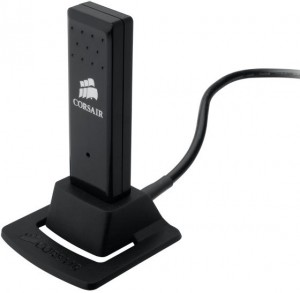
Ahora, remarcando la diferencia inalámbrica, el Vengeance 2000 cuenta con un dongle USB que hace las veces de la tarjeta de sonido y tiene un limite de distancia de 12 metros aproximadamente. Sobre la tecnología implementada para ofrecer una reproducción de audio acorde con la demanda actual, este modelo aún es capaz de producir sonido posicional 7.1 y 5.1 gracias Dolby Headphone para poder terminar inmerso en el juego o lo que sea que estés reproduciendo.
El gran plus del Vengeance 2000 es realmente su diseño, si detallamos el Vengeance 1500 vemos que cuenta prácticamente con las mismas prestaciones de sonido pero sin el cable y un diseño más robusto. Si te interesa dejar de llevar un gran cable puede que pagar 149 dólares por el Vengeance 2000 sea la mejor elección, pero si el presupuesto no es el más acorde y te interesa más el resultado que el diseño, entonces los 99 dólares de Vengeance 1500 es una alternativa a considerar.
Thu, 05 Apr 2012 22:04:11 GMT
Avid incluirá Pro Tools Express en sus sistemas Mbox y Mbox Mini
Avid incluirá Pro Tools Express en sus sistemas Mbox y Mbox Mini
Para aquellos que se dedican al mundo del sonido, es de sobras conocido que el estándar de facto es el software de la casa AVID Pro Tools. Aunque el programa lo podríamos calificar de 10, la pequeña pega que presenta es que cuenta con un precio relamente prohibitivo. Pero ahora tenemos una nueva forma de poder hacernos con una versión (ligera) a un precio asequible. Todo gracias a que Avid incluirá el programa Pro Tools Express en todos los sistemas Mbox y Mbox Mini Pro Tools Express viene a sustituir...
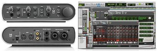
Para aquellos que se dedican al mundo del sonido, es de sobras conocido que el estándar de facto es el software de la casa AVID Pro Tools. Aunque el programa lo podríamos calificar de 10, la pequeña pega que presenta es que cuenta con un precio relamente prohibitivo. Pero ahora tenemos una nueva forma de poder hacernos con una versión (ligera) a un precio asequible. Todo gracias a que Avid incluirá el programa Pro Tools Express en todos los sistemas Mbox y Mbox Mini
Pro Tools Express viene a sustituir a la versión Pro Tools LE que ya se estaba quedando algo obsoleta. De esta forma, podrás utilizar todas las ventajas de Pro Tools, sin tener que desembolsar la escandalosa cifra que cuesta la versión completa (cerca de $700). Esta versión lite, que se vende de forma exclusiva con los equipos Mbox y Mbox Mini, no se pondrá a la venta de forma separada y en principio sólo funcionará con esos dos equipos. Las principales diferencias con la versión Full, es que cuenta con “tan sólo” 16 pistas y además se han quedado por el camino funciones como las de Clip Gain, Beat Detective o Timecode Ruler. Eso sí, en el caso de necesitar la versión completa, siempre podrás actualizar esta versión Express a la Pro por tan sólo $399.
Thu, 05 Apr 2012 21:05:01 GMT
Phantom V642: grabando a 5.850 fotogramas por segundo
Phantom V642: grabando a 5.850 fotogramas por segundo
No es la primera vez que os hablamos de las cámaras Phantom. Por aquí ya las hemos tratado en alguna que otra ocasión, debido a que Vision Research (su fabricante) está especializado en videocámaras broadcast de alta velocidad. Pues no contentos con sus Flex, M110 o V1210, acaba de sacar al mercado un nuevo modelo: la Phantom v642. Como en anteriores ocasiones, estamos hablando de un equipo destinado a un público profesional, y que con más que reducido tamaño consigue retratar todo lo que le rodea a una velocidad de...
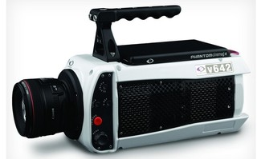
No es la primera vez que os hablamos de las cámaras Phantom. Por aquí ya las hemos tratado en alguna que otra ocasión, debido a que Vision Research (su fabricante) está especializado en videocámaras broadcast de alta velocidad. Pues no contentos con sus Flex, M110 o V1210, acaba de sacar al mercado un nuevo modelo: la Phantom v642.
Como en anteriores ocasiones, estamos hablando de un equipo destinado a un público profesional, y que con más que reducido tamaño consigue retratar todo lo que le rodea a una velocidad de vétigo y como no, en Alta Definición. Esta nueva Phantom v.642, cuenta con un sensor con 2K de resolución, que destaca por sus potencia en cuanto a grabación de alta velocidad. Así, tenemos las siguientes cifras, que son literalmente de infarto:
- Graba a resolución de 2560 x 1600 a 1.450FPS
- Graba a resolución de 1080p a 2560 FPS
- Graba a resolución de 720p a nada menos que 5.850 FPS
Lo dicho realmente impactante. Para poder procesar semejante cantidad de imágenes, cuenta con una memoria DRAM intermedia de 32GB, puesto que de otra forma se le atragantaría tan cantidad de frames juntos. Equipada con tomas HD-SDI, dual link 4:4:4 en HD-SDI y multi-matrix color correction (de modo que se pueda “parchear” su metraje con las del resto de cámaras que se estén utilizando en ese momento), no habrá penalty, fuera de juego o falta que se le escape. Pero como no hay nada como una imagen, aqui os dejo con un vídeo de muestra:
Thu, 05 Apr 2012 19:12:48 GMT
Alfine Di2: Shimano digitaliza los sistemas de cambio en bicicletas
Alfine Di2: Shimano digitaliza los sistemas de cambio en bicicletas
Shimano, una de las marcas más importantes en la rama del ciclismos ha dedicido pasar su sistema de cambios “premiun”, Alfine Di2 a disposición de todos. En primer lugar este sistema de cambios electrónicos se desarrrolló para un equipo de carreras profesional, pero en breve podría estar disponible para cualquier aficionado. La idea de un sistema electrónico, además digitalizado, es que hace más sencillo el proceso para el ciclista a la hora de realizar cambios logrando así mayor precisión. A pesar de que el sistema sigue siendo medianamente manual porque...
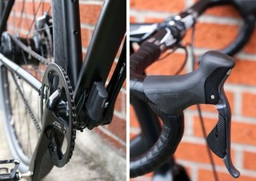
Shimano, una de las marcas más importantes en la rama del ciclismos ha dedicido pasar su sistema de cambios “premiun”, Alfine Di2 a disposición de todos. En primer lugar este sistema de cambios electrónicos se desarrrolló para un equipo de carreras profesional, pero en breve podría estar disponible para cualquier aficionado.
La idea de un sistema electrónico, además digitalizado, es que hace más sencillo el proceso para el ciclista a la hora de realizar cambios logrando así mayor precisión. A pesar de que el sistema sigue siendo medianamente manual porque aún se tiene que dar la orden “pulsando”, es el sistema interno en sí, donde se ubican los engranajes, que la electrónica ayuda mediante un pequeño motor a dar mayor precisión incluso seguridad pues ya no se depende de “guayas”, sino de la orden que reciba la maquina. Todo lo anterior se combina con una pequeña pantalla LCD donde se muestra toda la información de cambios, la velocidad y la batería, que por cierto, con un sola carga se podría recorrer hasta 1.000 kilómetros de distancia
Ahora, si bien podría parecer más lujo que cualquier otra cosa, particularmete no lo veo de esa manera, además de mejorar la estética, la precisión de cambios es algo realmente importante además de dar mayor confianza y durabilidad. Alfine Di2 estará disponible, posiblemente, a mediados de este año. Lamentablemente no se ha revelado el precio, que no debería ser muy económico por cierto.
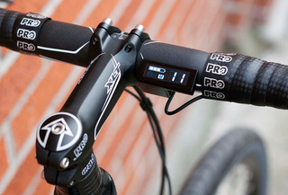
Mon, 09 Apr 2012 00:07:22 GMT
Lenovo saca a la venta este mismo mes su “smart TV” K71 en China
Lenovo saca a la venta este mismo mes su “smart TV” K71 en China
Seguramente recordaréis, el K91, la famosa incursión de Lenovo en el mundo de los televisores inteligentes (o Smart TV). Pues parece que el fabricante asiático le acaba de dar un hermano pequeño. Nos referimos al Lenovo K71, un equipo con un concepto similar al de su hermano mayor, pero de presupuesto más ajustado. Con un tamaño de 42 pulgadas y equipado con un procesador de doble núcleo a 1,5 Ghz, por el momento no ha trascendido la marca que lo fabricará, aunque si tenemos en cuenta que su hermano mayor...
Seguramente recordaréis, el K91, la famosa incursión de Lenovo en el mundo de los televisores inteligentes (o Smart TV). Pues parece que el fabricante asiático le acaba de dar un hermano pequeño. Nos referimos al Lenovo K71, un equipo con un concepto similar al de su hermano mayor, pero de presupuesto más ajustado.
Con un tamaño de 42 pulgadas y equipado con un procesador de doble núcleo a 1,5 Ghz, por el momento no ha trascendido la marca que lo fabricará, aunque si tenemos en cuenta que su hermano mayor lleva el sello de Qualcomm, no sería desencaminado pensar que quizás la misma marca se encuentre en este nuevo modelo. Integrará Android Ice Cream Sandwich y como no puede ser de otra forma hoy en día, será compatible con las tres dimensiones.
Pensando en los jugadores ocasionales, Lenovo incluirá con el equipo un mando a distancia especialmente diseñado para facilitar en juego on-line. Y es que como todo televisor “smart TV” que se precie, este Lenovo K71 se podrá conectar a Internet y aprovechar en el salón de casa, de las aplicaciones disponibles en la red. Si estás interesado en él, tendrás que esperar algún tiempo todavía, puesto que por el momento sólo se sabe que estará disponible a partir del próximo 10 de abril en territorio chino, a un precio recomendado de unos $1030.
Sun, 08 Apr 2012 22:04:06 GMT
Panasonic KX-TG7740 y KX-TG773: los teléfonos DECT que se conectarán con tu iPhone
Panasonic KX-TG7740 y KX-TG773: los teléfonos DECT que se conectarán con tu iPhone
Seguramente que en más de una ocasión, acostumbrados como estamos a utilizar el móvil para todo, nos ha resultado un auténtico engorro el hacer una llamada con el teléfono fijo de casa. Que si no encontrábamos el número de nuestro amigo en su agenda, que si “añadir” un contacto al teléfono fijo de casa es un lío de mucho cuidado y demás experiencias un tanto desquiciantes para hacer una simple llamada. Pues todo eso pasará a la historia gracias a la nueva gama de teléfonos DECT inalámbricos Panasonic de este...

Seguramente que en más de una ocasión, acostumbrados como estamos a utilizar el móvil para todo, nos ha resultado un auténtico engorro el hacer una llamada con el teléfono fijo de casa. Que si no encontrábamos el número de nuestro amigo en su agenda, que si “añadir” un contacto al teléfono fijo de casa es un lío de mucho cuidado y demás experiencias un tanto desquiciantes para hacer una simple llamada. Pues todo eso pasará a la historia gracias a la nueva gama de teléfonos DECT inalámbricos Panasonic de este 2012. Más concretamente, me refiero a los nuevos modelos KX-TG7740 y KX-TG773, que gracias a la tecnología Link2Cell, te harán la vida mucho más sencilla.
La gran ventaja de estos nuevos modelos, es que incluyen soporte para Bluetooth, así como integración del protocolo DECT 6.0 PLUS. Este último nos permitirá contar con hasta 6 terminales en casa, para que ningún rincón de nuestro hogar quede sin cobertura: desde la piscina, hasta la segunda planta, pasando por el garaje o el jardín. Pero la principal novedad se encuentra en la tecnología Link2Cell, que en combinación con su soporte Bluetooth puede suponer una pequeña revolución en la telefonía doméstica.
Y es que si cuentas con un iPhone, gracias a esa tecnología Bluetooth, puedes ya con la pulsación de una sola tecla pasar toda tu libreta de teléfonos desde tu móvil al fijo de casa sin complicados menús, ni programaciones absurdas: una pulsación y listo. Pero es que todavía hay más: gracias a esa misma conexión Bluetooth, podrás incluso hacer llamadas desde tu iPhone, como si fuera el teléfono de casa. De modo que te evitas el estar buscando el fijo o localizando números repetidos. Todo mucho más sencillo. Ambos equipos se encuentran ya a la venta, con precios que oscilan entre los $90 y $150.
Sat, 07 Apr 2012 02:35:24 GMT
Samsung Galaxy Note 10.1 se retrasa a junio, pero llega con chip de cuatro núcleos
Samsung Galaxy Note 10.1 se retrasa a junio, pero llega con chip de cuatro núcleos
Durante el MWC pudimos ver que Samsung ha hecho un gran trabajo con el software del Galaxy Note 10.1, sin duda un gran equipo. Lamentablemente para quienes esperaban que se lanzase durante estas fechas, la empresa cambió de planes según un nuevo reporte. Pero a pesar de que parezca una mala noticia, todo ha sido para bien porque tendremos más potencia para cuando esté disponible si esta información es correcta. Cuando se tuvo la oportunidad de probar el Galaxy Note 10.1 durante la feria llevaba un procesador de doble núcleo...

Durante el MWC pudimos ver que Samsung ha hecho un gran trabajo con el software del Galaxy Note 10.1, sin duda un gran equipo. Lamentablemente para quienes esperaban que se lanzase durante estas fechas, la empresa cambió de planes según un nuevo reporte. Pero a pesar de que parezca una mala noticia, todo ha sido para bien porque tendremos más potencia para cuando esté disponible si esta información es correcta.
Cuando se tuvo la oportunidad de probar el Galaxy Note 10.1 durante la feria llevaba un procesador de doble núcleo a 1.4 GHz, y si lo rumores son ciertos, el nuevo procesador que integraría contaría con cuatro núcleo y correría a 1.5GHz. Se especula que el chip sería un Exynos 4412 que concuerda con las especificaciones pero no es nada que se pueda confirmar realmente.
Lo más lógico para cualquier que se haga eco de esta información es alegar que la decisión de Samsung se debe a la llegada del iPad de tercera generación y puede que sea un punto válido pero no caeremos en ese campo, sólo nos alegraremos porque el cambio es bueno y simplemente beneficia al equipo. A pesar de que fue un hands on fugaz durante el Mobile World Congress se vio bastante fluido con un procesador de dos núcleos, con cuatro debe ser un paseo.
La llegada del Samsung Galaxy Note de 10 pulgadas estaría pautado para junio, la fecha exacta no se mencionó.
Fri, 06 Apr 2012 23:00:24 GMT
Raspberry Pi pasa los test para la certificación CE
Raspberry Pi pasa los test para la certificación CE
Parece que el panorama comienza a ser más alentador para el pequeño ordenador de 35 dólares, Raspberry Pi. Liz Upton, miembro de la fundación y bloggera incansable de cuanto acaece sobre la producción y venta del equipo o entresijos del proyecto, ha confirmado a través del blog oficial de Raspberry Pi que todas las pruebas para conseguir la marca CE que garantiza que el mini ordenador se pueda vender en territorio europeo han concluido, y que por supuesto la diminuta bestia ha conseguido pasarlas con nota, asegurándose que en los...
Parece que el panorama comienza a ser más alentador para el pequeño ordenador de 35 dólares, Raspberry Pi. Liz Upton, miembro de la fundación y bloggera incansable de cuanto acaece sobre la producción y venta del equipo o entresijos del proyecto, ha confirmado a través del blog oficial de Raspberry Pi que todas las pruebas para conseguir la marca CE que garantiza que el mini ordenador se pueda vender en territorio europeo han concluido, y que por supuesto la diminuta bestia ha conseguido pasarlas con nota, asegurándose que en los próximos días — o semanas — se podrá reanudar con total normalidad la actividad comercial.
Los consultores contratados por la fundación para llevar a cabo los tests requeridos han finaliazdo todo lo relacionado con estos, y lo único que queda pendiente para que Raspberry Pi reciba por fin el bendito sello es mero papeleo, y la aprobación de las dos cadenas de distribución, Farnell y RS Component, lo que ocurrirá la próxima semana. Tras una semana de intenso trabajo han conseguido cumplir sin ninguna modificación de hardware con todos los requisitos de la marca CE, lo que significa que las unidades ya producidas y retenidas en Reino Unido podrán tener salida casi inmediata, un consuelo para todos los early adopters que nos mordemos las uñas por la inquietud inquietud desde el bisiesto 29 de febrero. Pero la fundación ha ido un poco más allá, y para evitar problemas futuros se han querido asegurar de cumplir con otras normativas, de modo que Raspberry Pi está totalmente cualificado para recibir la marca de calidad CE, y también para cumplir con las normas de la FCC americana, así como el CTick de Australia y… lo que han querido llamar “esa cosa canadiente”.
Sorprendentemente, y como anécdota, Raspberry Pi pasó por un pequeño mal trago durante las pruebas de radiación electromagnética, aunque no fue culpa del equipo; en el test que medía la capacidad de seguir transmitiendo a través del puerto ethernet tras recibir el impacto de una onda EM tuvieron que repetir la rutina hasta tres veces, no porque Raspberry Pi fallase en el proceso, sino porque el hub de destino, comercial y por lo tanto con el sello de aprobación CE, se colapsaba cada vez que el impulso era transmitido. Buenas noticias por lo tanto para la fundación y los muchos geeks que todavía esperamos pacientemente y con la misma ilusión del primer día recibir nuestra propia placa en casa. Todavía no se ha anunciado la disponibilidad de unidades con marca CE, pero debería ser cuestión, como ya adelantaba, de días, o quizás con un poco de mala suerte, escasas semanas.
Fri, 06 Apr 2012 20:02:06 GMT
TGIF: Las gafas interactivas de Google no son tan buenas después de todo
TGIF: Las gafas interactivas de Google no son tan buenas después de todo
Después de la presentación de las gafas de Google todos nos quedamos con algo de ganas de probarlas y andar por la calle respondiendo mensajes a nuestros amigos, buscando rutas desconocidas, apuntando eventos y diferentes cosas que permitirá la tecnología. Sin duda una tecnología que logrará cambiar nuestras vidas. El tema es si logrará cambiarlas para bien o hará que vayamos caminando y nos terminemos dando la cabeza contra un post o chocando con otra persona por no mirar por donde caminamos. Tom Scott decidió hacer una parodia con el...
Después de la presentación de las gafas de Google todos nos quedamos con algo de ganas de probarlas y andar por la calle respondiendo mensajes a nuestros amigos, buscando rutas desconocidas, apuntando eventos y diferentes cosas que permitirá la tecnología. Sin duda una tecnología que logrará cambiar nuestras vidas.
El tema es si logrará cambiarlas para bien o hará que vayamos caminando y nos terminemos dando la cabeza contra un post o chocando con otra persona por no mirar por donde caminamos.
Tom Scott decidió hacer una parodia con el el proyecto de Google y dio como resultado un video de lo más gracioso que muestra la realidad que tendremos que soportar a diario en la calle en cuestión de tiempo.
Fri, 06 Apr 2012 18:07:53 GMT
MSI muestra “Super RAID” en su portátil gaming GT70, más rendimiento en el mismo espacio
MSI muestra “Super RAID” en su portátil gaming GT70, más rendimiento en el mismo espacio
Que hoy en día la mayoría de ordenadores de alto rendimiento incorporan almacenamiento sólido de un modo u otro es un hecho, y ya no es algo destacable; sin embargo el peculiar sistema que MSI ha creado para su línea de portátiles gaming sí, por lo interesante del concepto y sus resultados prácticos. La configuración Super RAID del laptop MSI GT70 no es algo que se vea a menudo en el mercado de los ordenadores portátiles. MSI, en su último equipo, de 17.3p ulgadas con CPU Ivy Bridge y tarjeta...
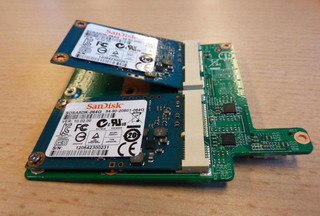
Que hoy en día la mayoría de ordenadores de alto rendimiento incorporan almacenamiento sólido de un modo u otro es un hecho, y ya no es algo destacable; sin embargo el peculiar sistema que MSI ha creado para su línea de portátiles gaming sí, por lo interesante del concepto y sus resultados prácticos. La configuración Super RAID del laptop MSI GT70 no es algo que se vea a menudo en el mercado de los ordenadores portátiles. MSI, en su último equipo, de 17.3p ulgadas con CPU Ivy Bridge y tarjeta gráfica de la línea Kepler, ha incorporado no una, sino dos unidades SSD integradas en una placa autónoma que se conecta al equipo, ofreciendo en el espacio que ocuparía una sola unidad HDD de 2.5 pulgadas, un sistema SSD dual que exprime hasta el último Megabyte por segundo de la interfaz Serial ATA III 6Gbps.
Super RAID incluye de serie dos unidades SSD de 64GB del fabricante Sandisk, modelo U100 según informa VR-Zone, capaces por separado de rendir hasta 450MB/s en lectura y 220MB/s en escrituras secuenciales, lo que por separado no resulta nada impresionante teniendo en consideración otras unidades de almacenamiento con controladora SandForce, que pueden superar con creces los 500MB/s tanto en lectura como escritura. Las dos placas mSATA están integradas en un PCB que se ancla a la placa base, donde el chipset Intel de serie 7 administra el modo RAID 0. El sistema es capaz de conseguir nada menos que 928MB/s en lectura secuencial, con picos impresionantes de 1997MB/s según HD Tune Pro. Las cifras son impresionantes, y en teoría ofrecerían al usuario de estos equipos un arranque mucho más rápido, y un acceso casi instantáneo a los archivos de sistema y aplicaciones, lo que resulta muy importante puesto que el punto flaco de este tipo de sistemas, con procesadores y GPU de alto rendimiento, es precisamente el almacenamiento.
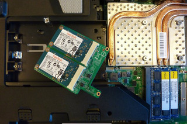
Las cifras son estratosféricas, y dejan en ridículo a otros equipos configurados con una sola unidad — o con caché SSD — pero podría alcanzar cotas incluso mayores si se sustituyen las unidades de serie por otras de altas prestaciones. Aunque existen otros sistemas de disco múltiple en ordenadores portátiles, este es especialmente curioso por su montaje, con una pequeña placa que permite integrar las dos unidades en tan poco espacio.
Fri, 06 Apr 2012 16:05:04 GMT
LaCie eSATA Hub Thunderbolt disponible por US$200
LaCie eSATA Hub Thunderbolt disponible por US$200
A principios de enero, con la fiebre del CES, la empresa LaCie estuvo hablando de los eSATA Hub Thunderbolt. Lo que ofrecen de interesante es que le dan la posibilidad al usuario de utilizar los eSATA a través de Thunderbolt agregándole una importante flexibilidad. Desde la compañía anunciaron que los eSATA Hub incrementará notablemente la velocidad de transferencia, lo que es lógico porque utiliza la tecnología Thunderbolt. El hub presenta una velocidad de 3Gb por segundo. Gracias a la conexión en serie permitirá conectar hasta 12 discos eSATA (6 hubs...
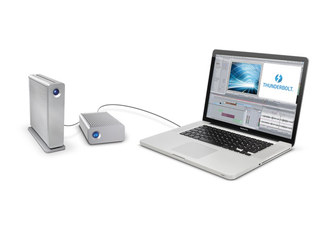
A principios de enero, con la fiebre del CES, la empresa LaCie estuvo hablando de los eSATA Hub Thunderbolt. Lo que ofrecen de interesante es que le dan la posibilidad al usuario de utilizar los eSATA a través de Thunderbolt agregándole una importante flexibilidad.
Desde la compañía anunciaron que los eSATA Hub incrementará notablemente la velocidad de transferencia, lo que es lógico porque utiliza la tecnología Thunderbolt. El hub presenta una velocidad de 3Gb por segundo.
Gracias a la conexión en serie permitirá conectar hasta 12 discos eSATA (6 hubs x 2 eSATA por hub) y, conectando de esta manera, incluso se puede mantener las increíbles velocidades de transferencia. Otra de las características que posee es que el usuario no tendrá que preocuparse demasiado por andar conectando y desconectando porque las múltiples conexiones se pueden realizar solo con un cable a través de Thunder I/O.
El que lo quiera adquirir lo puede hacer ahora mismo a US$200.
Fri, 06 Apr 2012 14:03:24 GMT
La tableta de Google llegará en julio porque quieren reducir su precio
La tableta de Google llegará en julio porque quieren reducir su precio
La tableta de Google está dando que hablar. Hace ya un tiempo que se están rumoreando cosas en relación a ella y uno de los motivos es que la gran G tiene la intención de lanzarla para poder impulsar la utilización de Android y, para eso, la financiará para que el precio sea de lo más asequible. Ahora se supo que la empresa no la lanzará hasta, como poco, julio. En teoría se había hablando de un potencial lanzamiento en mayo, pero Google lo atrasó para poder modificar el dispositivo....

La tableta de Google está dando que hablar. Hace ya un tiempo que se están rumoreando cosas en relación a ella y uno de los motivos es que la gran G tiene la intención de lanzarla para poder impulsar la utilización de Android y, para eso, la financiará para que el precio sea de lo más asequible.
Ahora se supo que la empresa no la lanzará hasta, como poco, julio. En teoría se había hablando de un potencial lanzamiento en mayo, pero Google lo atrasó para poder modificar el dispositivo.
La compañía tiene en mente hacerle unos cambios de diseño y, con eso, espera poder bajar todavía más el precio y llevarlo más abajo de los US$250. Google ya tiene un acuerdo con Asustek y lo que se sabe es que vendrá con una pantalla de 7 pulgadas, un procesador NVIDIA Tegra 3 con un procesador quad-core, WiFi y correrá, como no puede ser de otra manera la última versión de Android.
Los US$250 son un tanto más elevados de los que se vienen comentando que van desde los US$150 hasta los US$200. Sin ir más lejos, la tableta más exitosa del mercado con Android, que se trata del Kindle Fire y también posee una pantalla del mismo tamaño, cuesta US$199. Si quieren entrar en esa pelea, como mínimo, tiene que costar lo mismo o menos.
Fri, 06 Apr 2012 10:53:18 GMT
BlackBerry PlayBook 4G a la vista, incluye BlackBerry Messenger
BlackBerry PlayBook 4G a la vista, incluye BlackBerry Messenger
Con la expansión de las redes LTE por todo el mundo, que esperemos nos toque en Europa y latinamérica muy pronto, es normal empezar a ver más tablets compatibles con redes 4G. Una de las tablets que ha sido como el Ave Fénix, ha vuelto a renacer gracias a una actualización de software como es la BlackBerry PlayBook va a tener una segunda versión, pero no nada nuevo, si no la misma tablet con el mismo diseño, solo que esta por fin integra compatibilidad con redes inalámbricas 4G e inferiores...
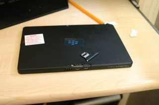
Con la expansión de las redes LTE por todo el mundo, que esperemos nos toque en Europa y latinamérica muy pronto, es normal empezar a ver más tablets compatibles con redes 4G. Una de las tablets que ha sido como el Ave Fénix, ha vuelto a renacer gracias a una actualización de software como es la BlackBerry PlayBook va a tener una segunda versión, pero no nada nuevo, si no la misma tablet con el mismo diseño, solo que esta por fin integra compatibilidad con redes inalámbricas 4G e inferiores y aquí están las primeras imágenes filtradas.
Esta BlackBerry PlayBook 4G es compatible con redes LTE de EE.UU. y Canadá, pero además se supone que tendrá compatibilidad con redes HSPA+, HSDPA y redes GSM tradicionales para poca cobertura.
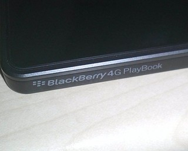
Es evidente que teniendo la BlackBerry World del 1 al 3 de mayo, una fecha tan cercana, seguramente podremos ver el anuncio de esta nueva versión para emrpesas que necesiten conectividad aparte de su smartphone.
Pero la buena noticia es que esta tablet por fin se hace independiente de una BlackBerry u otro smartphone que le de conexión. Completamente independiente, incluyendo BlackBerry Messenger para asegurarse que tiene todos los servicios de una BlackBerry pero en formato Tablet no es mal paso para intentar avivar sus ventas.
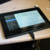
Vía: The Verge
Thu, 05 Apr 2012 23:07:20 GMT
Cisco lanza su nueva línea de routers “inteligentes”
Cisco lanza su nueva línea de routers “inteligentes”
Cisco ha revelado sus nuevos “Smart Wi-Fi” Routers, capaces de ejecutar “aplicaciones” y servicios al más puro estilo servidor NAS, dentro de la serie Linksys EA con tres modelos, EA4500, EA3500 y EA2700 con precios entre 99 y 199 dólares, ofreciendo todos grandes prestaciones en conectividad inalámbrica, así como acceso a Cisco Connect Cloud, que permite administrar múltiples redes domésticas de un modo cómodo y sencillo, pudiendo dar acceso a internet a invitados, ajustar controles de seguridad infantil o añadir dispositivos a la red Wi-Fi desde cualquier lugar utilizando la...
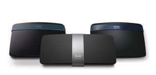
Cisco ha revelado sus nuevos “Smart Wi-Fi” Routers, capaces de ejecutar “aplicaciones” y servicios al más puro estilo servidor NAS, dentro de la serie Linksys EA con tres modelos, EA4500, EA3500 y EA2700 con precios entre 99 y 199 dólares, ofreciendo todos grandes prestaciones en conectividad inalámbrica, así como acceso a Cisco Connect Cloud, que permite administrar múltiples redes domésticas de un modo cómodo y sencillo, pudiendo dar acceso a internet a invitados, ajustar controles de seguridad infantil o añadir dispositivos a la red Wi-Fi desde cualquier lugar utilizando la web de administración de Cisco.
Los routers inteligentes Linksys EA se beneficiarán también de las aplicaciones disponibles por parte de Cisco y desarrolladores autorizados que ofrecerán funcionalidades adicionales para la red coméstica, de modo que se puedan experimentar servicios similares a los que obtenemos de los servidores NAS más avanzados, con la posibilidad de descargar nuevo software conforme esté disponible. Cisco trabaja con más de dos docenas de desarrolladores de aplicaciones, proveedores de servicios y fabricantes de electrodomésticos como Whirpool, que están trabajando para crear toda clase de dispositivos conectados inteligentes, como electrodomésticos de distinta factura, que podrían conectarse a nuestra red inalámbrica de modo que tengamos la posibilidad de interactuar con ellos, convirtiendo nuestro hogar en el “legendario” hogar domótico, pudiendo encender y apagar remotamente el horno, controlar las existencias de nuestro frigorífico, o poner en marcha la lavadora o el lavavajillas, por poner algunos ejemplos prácticos.
Los modelos lanzados por Cisco están divididos según sus prestaciones, destacando por encima de todo el Linksys EA4500, buque insignia de la serie, que por un precio de US$199 ofrecerá conectividad inalámbrica 802.11n de doble banda (2.4 y 5Ghz) hasta 900Mbps, cuatro puertos ethernet Gigabit, un puerto USB para conectar almacenamiento externo o impresoras para su gestión en red, un servidor multimedia DLNA, controles parentales y soporte IPv6 (como es de recibo en estos momentos). Este modelo está orientado hacia entusiastas y conocedores de lo que puede llegar a ofrecer un router de estas características.
En término medio nos encontramos el router Linksys EA3500, disponible por US$139 y con red inalámbrica N de doble banda hasta 750Mbps. Al igual que su hermano mayor ofrece cuatro puertos Ethernet Gigabit y un USB con servidor DLNA y los servicios básicos de control aprental, acceso de invitados e IPv6. Con un ancho de banda un poco inferior, este dispositivo sería ideal para los que buscan muchos servicios disponibles pero no precisan de una velocidad extrema, necesaria para múltiples streams de vídeo en alta definición, por poner un ejemplo.
Por último, en la base de la pirámide está Linksys EA2700, un router inalámbrico básico por US$99 que ofrece la misma conectividad de doble banda hasta 600Mbps, el doble del “estándar” habitual. Este modelo carece de puerto USB, con lo que no podremos utilizarlo a modo de servidor de archivos ni como estación de impresión inalámbrica, pero comparte con los otros miembros de la familia el resto de sus características. Este router es para el usuario que precisa únicamente un router eficiente y sólido, con un gran ancho de banda.
La serie de routers Cisco Linksys EA está disponible ya en los Estados Unidos desde distribuidores como Amazon, así como a través de la tienda online oficial de Linksys. Por el momento no habrá acceso a los servicios en la nube de Cisco, que llegarán a todos los mercados de manera totalmente gratuita en el mes de junio. Las aplicaciones y servicios de terceras compañías también estarán disponibles en el mismo mes.
Thu, 05 Apr 2012 21:08:38 GMT
Diana F+ Cai Guo-Qiang la Lomo para coleccionistas
Diana F+ Cai Guo-Qiang la Lomo para coleccionistas
Si eres un amante de la lomografía y al mismo tiempo un coleccionista empedernido, entonces estás de enhorabuena ya que el último equipo que acaban de presentar desde Lomo cumple con ambos requisitos. Estamos hablando nada más y nada menos que de la cámara edición especial Diana F+ Cai Guo-Qiang. Esta nueva cámara lomo de medio formato será un objeto de coleccionista, no sólo por estar decorada por el mismísimo Cai Guo-Qiang, sino porque contará con una edición más que limitada de tan sólo 1000 unidades. Aunque cuente con un...
Si eres un amante de la lomografía y al mismo tiempo un coleccionista empedernido, entonces estás de enhorabuena ya que el último equipo que acaban de presentar desde Lomo cumple con ambos requisitos. Estamos hablando nada más y nada menos que de la cámara edición especial Diana F+ Cai Guo-Qiang.
Esta nueva cámara lomo de medio formato será un objeto de coleccionista, no sólo por estar decorada por el mismísimo Cai Guo-Qiang, sino porque contará con una edición más que limitada de tan sólo 1000 unidades. Aunque cuente con un diseño diferente, en realidad estamos hablando de un equipo con las mismas características que la Lomo Diana F+, sólo que en una eidición que seguramente se convertirá en altamente buscada por los amantes de los objetos únicos.
Así, esta versión especial cuenta con dos velocidades de obturación (“N” para modo normal -dia/flash- y “B” para interior/noche), exposición múltiple, posibilidad de tirar o bien fotos cuadradas “normales” o más pequeñas de tan sólo 4.2 x 4.2cm, modo Pinhole y como puedes ver en la imagen, flash integrado de serie. Si te quieres hacer con una de ellas corre, puesto que con un precio de $127.15 seguramente volarán pronto…
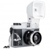
Thu, 05 Apr 2012 20:35:50 GMT
Nissan usará Intel Atom en futuros automóviles
Nissan usará Intel Atom en futuros automóviles
En el 2013 los automóviles eléctricos de Nissan usarán los microprocesadores Atom de Intel, según fue mostrado en el International Auto Show de New York hace unas horas ambas empresas mostraron que han llegado a un acuerdo para que el hardware de Intel sea quien proporcione la potencia al sistema de entretenimiento. Por ahora se trata de un concepto de la serie Infiniti LE que abarca sólo modelos eléctricos y tal como se puede ver el imagen, todo el sistema multimedia estará respaldado por procesadores Atom. No se especificó si...
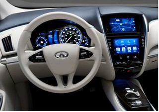
En el 2013 los automóviles eléctricos de Nissan usarán los microprocesadores Atom de Intel, según fue mostrado en el International Auto Show de New York hace unas horas ambas empresas mostraron que han llegado a un acuerdo para que el hardware de Intel sea quien proporcione la potencia al sistema de entretenimiento.
Por ahora se trata de un concepto de la serie Infiniti LE que abarca sólo modelos eléctricos y tal como se puede ver el imagen, todo el sistema multimedia estará respaldado por procesadores Atom. No se especificó si el modelo a utilizar será de los actuales, los futuros Cedar Trail o un modelo diseñado especificamente para los autos de Nissan. En la practica, el sistema diseñado por Nissan contaría con la posibilidad de mostrar de forma interactiva la información de auto, del tráfico en tiempo real mientras también administra el contenido audivisual como la música y películas.
Entre otras características, ese sistema de Nissan estaría enfocado a ofrecer mayor integración dispositivos móviles, incluso permitir que se controle el auto desde un smartphone, desde encender hasta apagarlo, manipular la ventanillas -algo que hasta este punto ya se puede lograr en diferentes fabricantes. Lo curioso y que más llama la atención de Nissan y su sistema inteligente es que va más allá pues el auto podría mantener conexión en todo momento y mediante servicios en la nube podría enviar información a su dueño de cualquier evento fuera de lugar, por ejemplo, si es chocado mientras está estacionado en un centro comercial se notificaría de inmediato. Hablando un poco del automóvil, también integra la tecnología de recarga inalámbrica que podría ser activada mediante una aplicación para teléfonos inteligentes de la que ya hemos hablado en una oportunidad.
La integración estaría lista para 2013, pero la comercialización estaría pautada para el 2015.